Projekt · Musik & Bild-Installation
Das Summen der Honigbiene
The Honey Bee’s Buzz
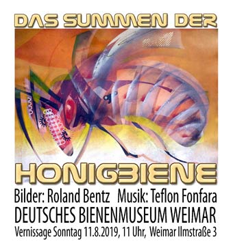
Radiosendung vom 26. März 2019
Hier anhören!
Hans-Peter Zein spricht im Freien Radio Stuttgart mit Roland Bentz und Teflon Fonfara über das Projekt, und wir hören Titel aus der CD „Das Summen der Honigbiene“.
CD-Info
Laufzeit: 1:06 Std.
Die Titel
- Bienengeflüster
- Ankunft der Bienen
- Süßer Honig
- Honigtanz
- Bienenkarawane
- Das Summen der Honigbiene II
- Das Summen der Honigbiene I (1987)
English
- Bees’ Whisper
- Arrival of the Bees
- Sweet Honey
- Honey Dance
- Bees’ Caravan
- The Honey Bee’s Buzz II
- The Honey Bee’s Buzz I (1987)
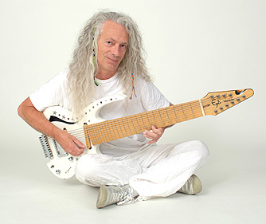
Die Musik
Bereits vor Jahrzehnten kam es zur ersten Zusammenarbeit zwischen dem Maler Roland Bentz und dem Musiker Teflon Fonfara. Bienen waren damals schon das Thema und Teflon Fonfara komponierte 1987 für eine Bentz-Installation um Bienen und Bienenkörbe das Musikwerk „Das Summen der Honigbiene“.
32 Jahre später sollte die Idee wieder aufleben und zur Vernissage von Roland Bentz erscheint die Neuversion vom „Summen der Honigbiene“ auf CD.
Teflon Fonfara präsentiert ein Konzept-Album um Musik mit Bienenklängen, reichhaltig ausgestattet mit kreativen Ereignissen aus Geräuschen, Musik und Klängen.
Fonfara vermischt das Bienen-Surren mit E-Gitarren, Chören, Orchesterklängen, indischer Musik, Industriegeräuschen und vorbeifahrenden Rennwagen. Diese bunte Erlebniswelt schwebt auf mystischen Rhythmen und modernen Beats und wird zum spannenden Tongemälde voller Überraschungen.
Teflon Fonfara hat Tonaufnahmen von Einzelinsekten und Bienenschwärmen digital auf 440 Hertz konfiguriert, so kann er die Bienen in seinen Tongemälden mitsingen lassen, darum sind alle Titel auf der CD in A komponiert.
Es entstanden 6 Werke, das Erstlingswerk von 1987 ist am Schluss ebenso angefügt.
Die Bilder
Roland Bentz
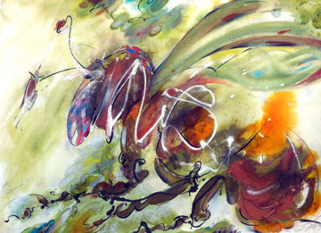
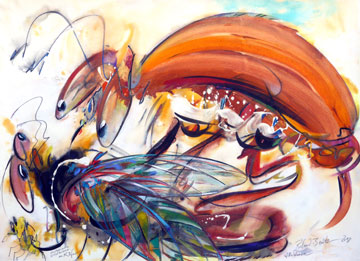
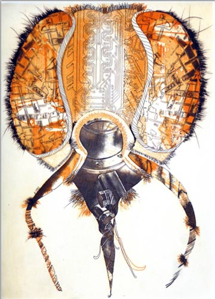
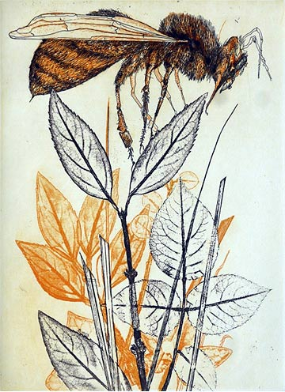
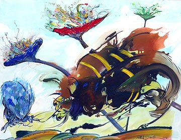
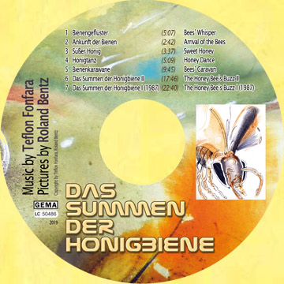
Die Werkstatt
Wie aus Bienenmusik ein Bild wird.
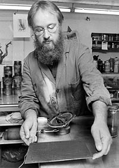
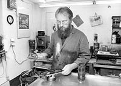
Kontakt
Roland Bentz
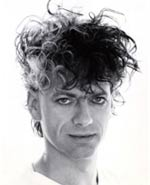